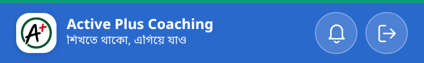
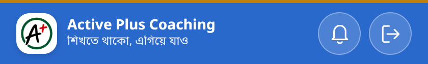
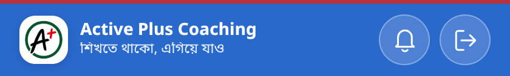
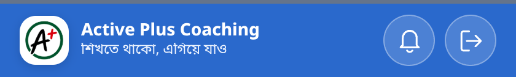
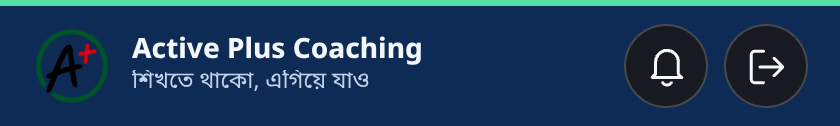
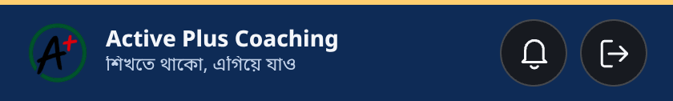
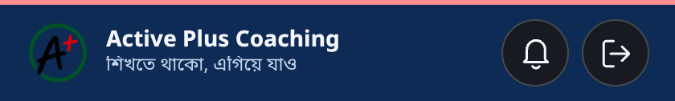
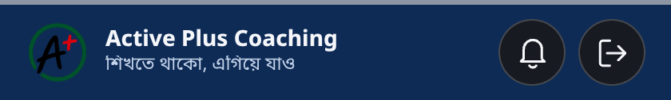
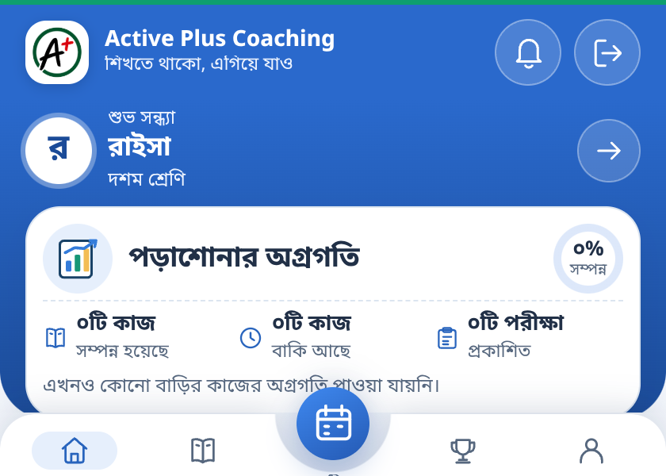

লাইভ ডেমো — আসল অ্যাপ কোড দিয়ে নিচের topbar-টি index.html থেকে হুবহু আনা, আর বাটনগুলো আসল js/sync-status.js চালায়
ডেমো লোড হচ্ছে… (এই অংশটি HTTP সার্ভারে খুললে আসল topbar ও স্টেট বাটন দেখা যাবে)
verdict (
<html data-sync-visual>)—
border-top-color —
border-top—
অবস্থা অনুযায়ী বর্ডার আসল অ্যাপের স্ক্রিনশট (headless Chromium, লাইট + AMOLED) · লাইনটি সব অবস্থায় ৩px, শুধু রঙ বদলায়

online + firebaseLastSync — সিঙ্ক সম্পন্ন (অপেক্ষার পরেও সবুজ থাকে)
pending / connecting — সিঙ্ক চলছে (ধীর breathing animation)
error / offline / conflict / storage — কোনো লেখা নেই, শুধু লাল
paused / কিছুই নির্ধারিত নয় — নিরপেক্ষ ধূসর



পাঁচ প্যানেলেই একই আচরণ একটি <html data-sync-visual> verdict → সব topbar; পরে তৈরি হওয়া bar-ও সঙ্গে সঙ্গে সঠিক রঙ পায়



ম্যানেজার ও শিক্ষক প্যানেলেও হুবহু একই রঙ ও একই উচ্চতা (৬৩px) পাওয়া গেছে — ছবি এক হলে পুনরাবৃত্তি এড়ানো হয়েছে।
স্বয়ংক্রিয় যাচাই আসল js/sync-status.js চালিয়ে computed style পড়া হয়েছে · pageerror শূন্য
| sync-status state | verdict | border-top (light) | border-top (AMOLED) |
|---|---|---|---|
paused | idle | rgb(97,112,139) ⚪ | rgb(142,150,163) ⚪ |
pending / connecting | syncing | amber (breath) 🟡 | lifted amber 🟡 |
online + firebaseLastSync | synced | rgb(14,159,110) 🟢 | rgb(84,224,164) 🟢 |
error / offline | error | rgb(185,28,28) 🔴 | rgb(255,141,146) 🔴 |
পুরো টেস্ট স্যুট ৮২৩/৮২৩ পাস; নতুন tests/sync-border-indicator.test.mjs রঙ-মানচিত্র, “সবুজ থেকে যায়”, topbar-এ সিঙ্ক-টেক্সট নিষিদ্ধ, দুই থিমের প্যালেট টোকেন ও অন্য শিট যাতে লাইনটি না ভাঙে — সব যাচাই করে।
বিস্তারিত: docs/SYNC-INDICATOR-167.md · অ্যাপের লগইন পাতা
ছবিগুলো আসল অ্যাপের, নমুনা ডেটাসহ — কোনো বাস্তব শিক্ষার্থী, লেনদেন বা ক্লাউড ডেটা নয়। Firebase/সিঙ্ক লজিক, ডেটা ও authentication অপরিবর্তিত।